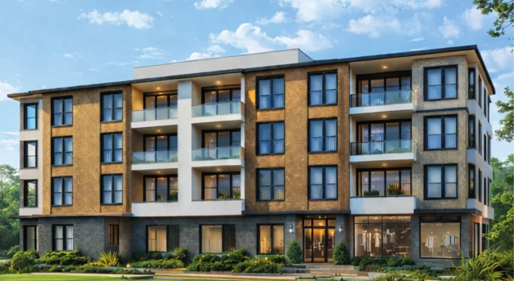
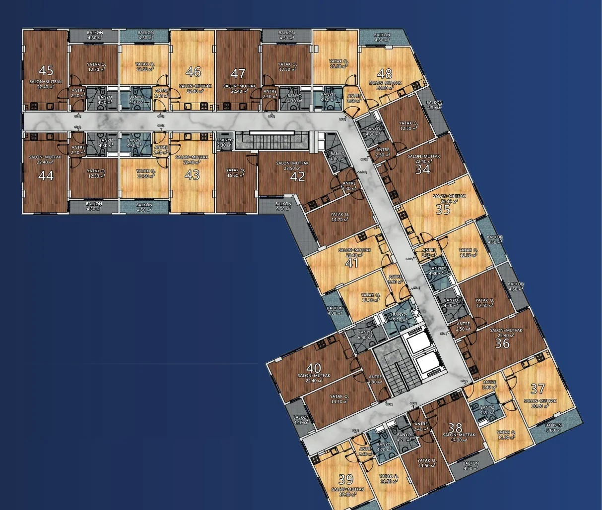
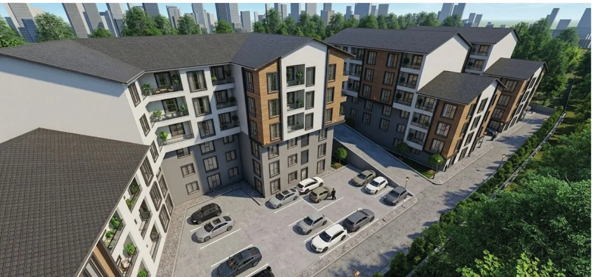
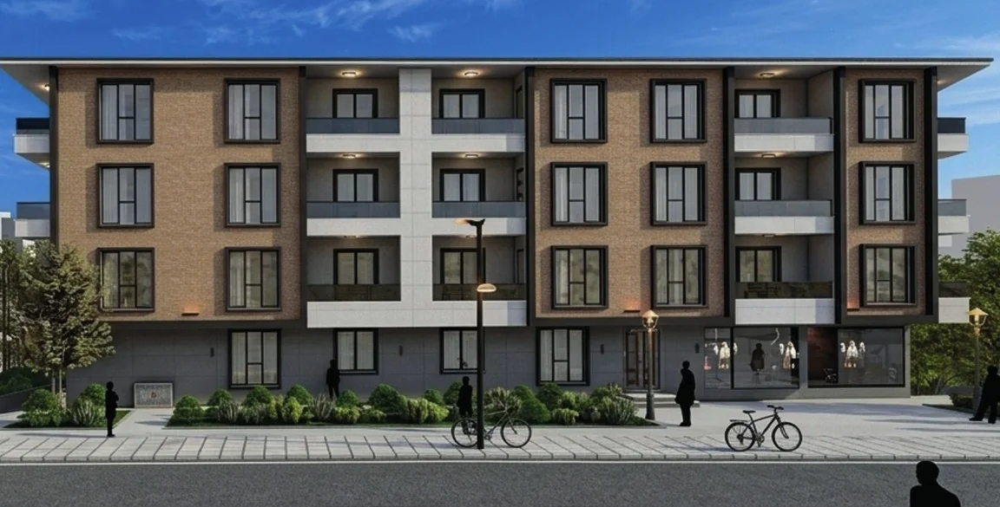
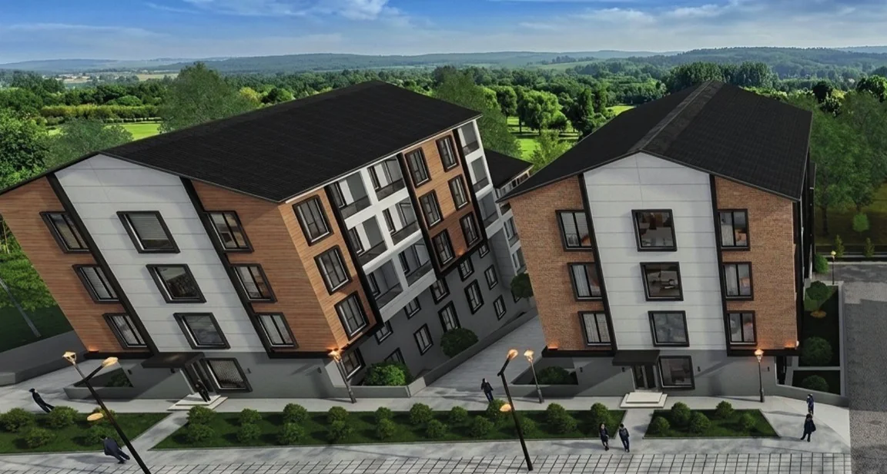
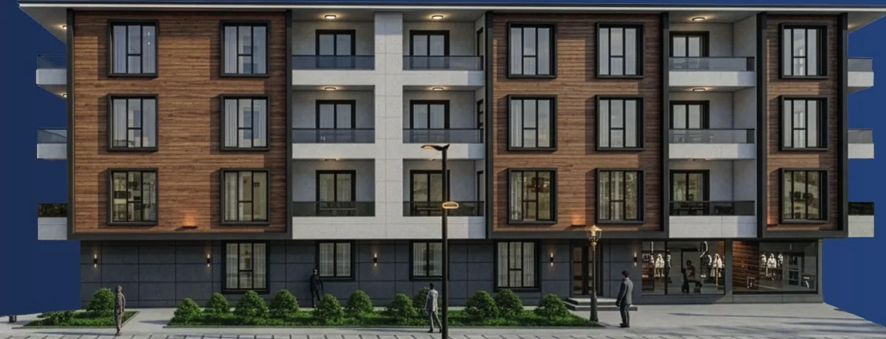
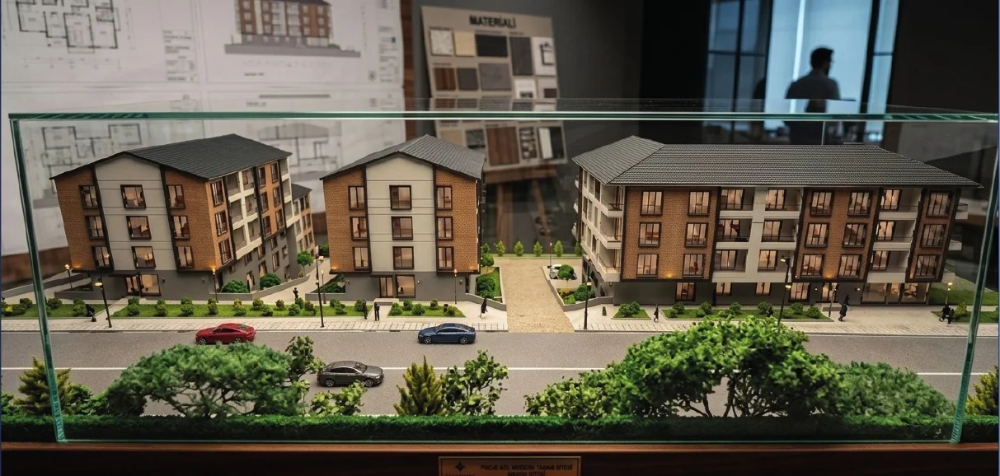

Konuralp · Düzce
Vadi Yörükler
Şehir bağlantıları ve günlük yaşam ihtiyaçlarına yakın, modern 1+1 dairelerden oluşan konut projesi.
Proje özeti
Konuralp'te kompakt ve işlevsel yaşam
Vadi Yörükler, 38 adet 1+1 daireden oluşuyor. Kaynak proje sunumu; üniversite, hastane, teknopark ve günlük yaşam noktalarına yakınlığıyla genç profesyoneller, akademisyenler, öğrenciler ve sağlık çalışanları için erişilebilir bir yaşam düzeni vurguluyor.
Kaynakta geliştirici olarak Akyıldız Group belirtiliyor. Projenin teslim veya inşaat durumu sunumda açık biçimde verilmediği için bu konuda bir durum beyanı yapılmamıştır.
Konum avantajları
Günlük ihtiyaçlara ve bölgesel bağlantılara yakın
Aşağıdaki süreler proje kataloğunda belirtilen yaklaşık ulaşım süreleridir.
- 2 dk.Teknopark
- 5 dk.Hastane
- 5 dk.Üniversite
- 5 dk.Cafeler Caddesi
- 15 dk.Prusias ad Hypium
- 30 dk.Akçakoca
- 30 dk.Bolu
- 2 saatİstanbul
Proje özellikleri
İşlevsel planlama ve ortak yaşam düzeni
- Yerden ısıtma
- Çift asansör
- Seramik zemin
- Site güvenliği
- Peyzaj ve ortak alanlar
- Modern 1+1 daire planlaması
Kat planı ve alanlar
L biçimli yerleşim içinde 1+1 daireler
Net ve brüt değerler kaynak sunumda ayrı aralıklar halinde paylaşılmıştır; bağımsız bölüm bazında eşleştirme ve güncel müsaitlik ayrıca teyit edilmelidir.

Alan aralıkları
- 28,70–42,10 m²Net alan
- 32,10–52,20 m²Brüt alan
- 38Toplam daire
- 1+1Daire tipi
Proje galerisi
Cephe ve yerleşim görünümleri
Görseller kaynak proje sunumundaki mimari renderlardan hazırlanmıştır.





Ödeme modeli
Kaynak sunumda belirtilen ödeme yaklaşımı
Vadi Yörükler
Proje hakkında güncel bilgi alın
Müsaitlik, ödeme koşulları ve proje ayrıntılarını değerlendirmek için Murathan Arslan ile iletişime geçin.